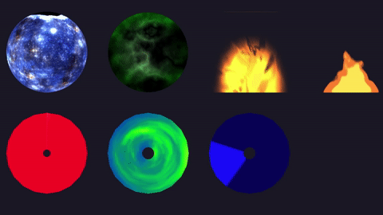
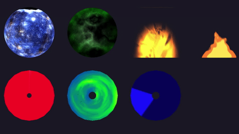

Lumak
A method to use models(flat models) and custom shaders in UI:
repo: https://github.com/Lumak/Urho3D-Custom-UI-Mesh

Post any issues here.

A method to use models(flat models) and custom shaders in UI:
repo: https://github.com/Lumak/Urho3D-Custom-UI-Mesh

Post any issues here.
There might be frequent code updates, as I’m still optimizing it but I think I got the last of what I wanted to change for now.

I’m was seeing errors while compiling this against the master branch but I was able to fix them very quickly. Anyway here’s the fixed version for the builds against the Urho3D master branch
https://github.com/ArnisLielturks/Urho3D-Custom-UI-Mesh
When building against the latest master branch I see these results:

For the 1.7 version everything works as expected
The bubble that you’re seeing is from JTippetts healthmana bubble resource - there’s actually two versions of it. I looked at your repo and you’re using the resourcebubble.xml material file from my repo. You must be using the healthmana material in your own sandbox.
edit: I thought there were two, but I’ve must grabbed the earlier version of his resource, or maybe from his 1st gist post.
Yes, thanks. That indeed was the case. Everything look great now!
Another use case for disk/wheel UIMesh:

The Racer HUD looks great
How did you do it ?
The tachometer uses a similar method as the red-wheel in the gif.

In my opinion this feature should be added to Urho3D. Currently there’s no way to modify the material an UIElement uses, since UIBatch has no material or shader parameters.

https://github.com/PredatorMF/Urho3D/tree/CustomUIShader
I’ve tried to simplify, seems to be working great, thanks @Lumak for your work.
UIBatch now has custom_material_ member so custom components could use it and also BorderImage has Material attribute. Updated AngelScript bindings.
That’s a nice, clean implementation. Good work!

I used to use alpha-test value to draw the HP ball in DX9 time. The short coming is that alpha test is only 0~255 values.